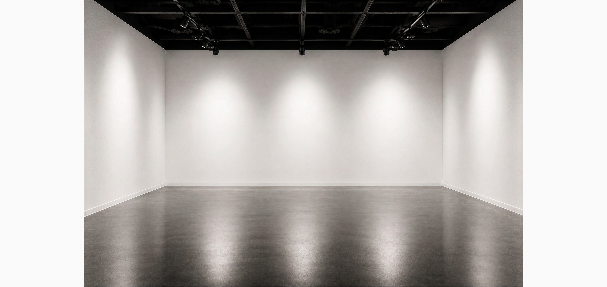
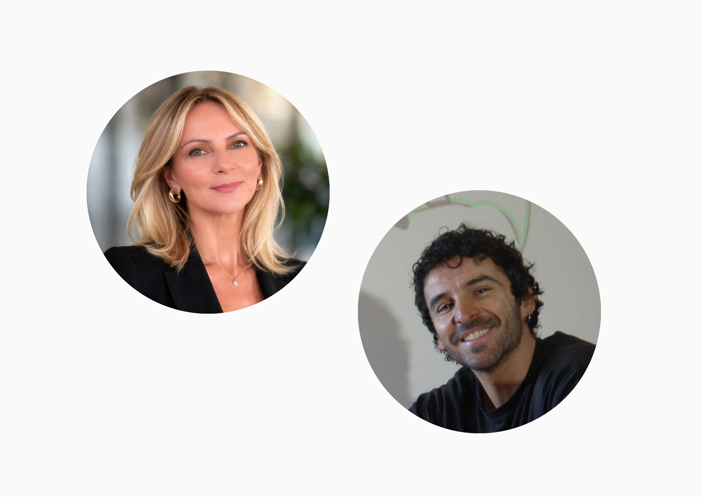
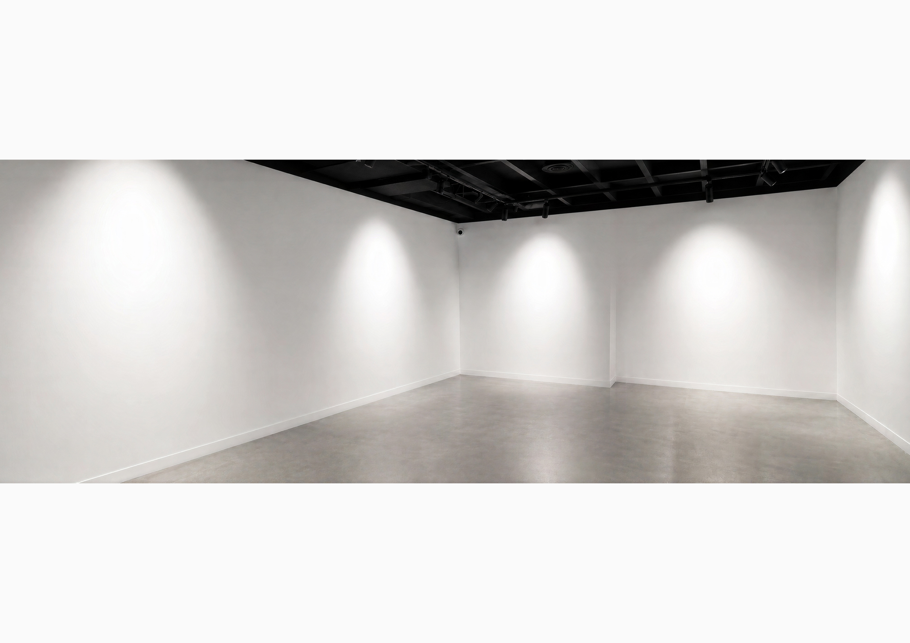

ABOUT KIN
Contemporary art,
without boundaries.
KIN Contemporary is a Sydney-based digital gallery representing distinctive contemporary artists from Australia and around the world.
We create considered spaces for art to be discovered, understood and collected beyond the limits of the traditional gallery model.

WHO WE ARE
A contemporary platform built around meaningful connections.
KIN was created to bring artists, collectors and curious audiences closer together.
We work with artists whose practices are distinctive, thoughtful and visually compelling, presenting their work through exhibitions, digital experiences and considered collaborations.
Based in Sydney and connected internationally, KIN looks beyond geography and established boundaries to build a programme driven by individuality, curiosity and strong contemporary voices.

OUR APPROACH
Art first.
Everything else follows.
We believe discovering and collecting art should feel personal, intuitive and unhurried.
KIN combines thoughtful curation with a digital-first approach, allowing each work to receive the space, attention and context it deserves.
Our aim is not to reproduce the traditional gallery experience online, but to create a different kind of environment: accessible, focused and built around the relationship between artwork and audience.

OUR PHILOSOPHY
We believe art creates relationships — between an artist and an audience, between a work and a space, and ultimately between people.
KIN Contemporary

OUR PROGRAMME
Distinct voices.
Thoughtful exhibitions.
A global outlook.
Rather than following a single aesthetic, KIN is interested in artists with recognisable visual languages, strong ideas and practices that continue to reveal themselves over time.
Our programme brings together emerging and established artists working across painting, sculpture, mixed media and multidisciplinary practices.
Through exhibitions, curated presentations and digital projects, we create opportunities for discovery while supporting long-term relationships between artists and collectors.
Explore Our Artists
A DIGITAL GALLERY
A gallery experience that extends beyond a physical space.
KIN was conceived as a digital platform from the beginning. This allows us to connect artists and audiences across cities, countries and time zones without sacrificing curatorial intention.
Our online exhibitions and presentations are designed around clarity and immersion, giving artworks room to be considered rather than consumed quickly.
Physical exhibitions, collaborations and special projects extend this experience into the real world, creating a gallery model that can move between digital and physical spaces.

COLLECTING WITH KIN
Discover art that stays with you.
Whether you are acquiring your first artwork or developing an established collection, KIN offers a personal and informed approach to collecting.
We provide additional imagery, artwork details, certificates of authenticity, shipping information and direct guidance whenever required.
Explore Available WorksARTIST SUBMISSIONS
Introduce your practice.
KIN Contemporary welcomes introductions from emerging and established artists whose work connects with our curatorial direction.
Artists interested in representation, exhibitions or future collaborations are invited to send a short introduction together with a selection of recent work, an artist biography, statement and relevant portfolio links.
Contact KIN